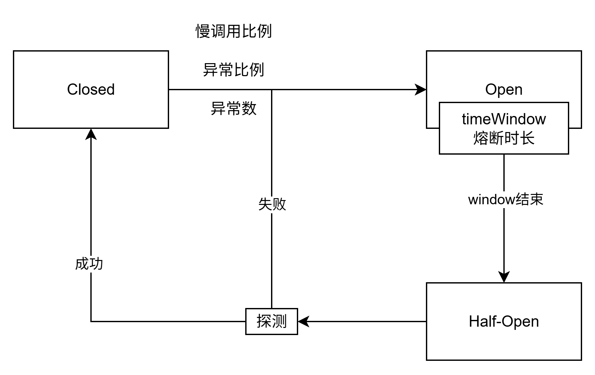

Sentinel
面向分布式、多语言异构化服务架构的流量治理组件。
1. 工作原理
- 定义资源（编程式
SphU API，声明式@SentinelResource） - 定义规则
- 检验规则是否生效
2. 异常处理
2.1 Web接口
2.1.1 运行流程
SentinelWebInterceptor 继承自 AbstractSentinelInterceptor ，在 preHandle 方法中默认使用 DefaultBlockExceptionHandler 来处理异常。
public abstract class AbstractSentinelInterceptor implements HandlerInterceptor {
// ...
@Override
public boolean preHandle(HttpServletRequest request, HttpServletResponse response, Object handler)
throws Exception {
String resourceName = "";
try {
resourceName = getResourceName(request);
if (StringUtil.isEmpty(resourceName)) {
return true;
}
if (increaseReference(request, this.baseWebMvcConfig.getRequestRefName(), 1) != 1) {
return true;
}
// Parse the request origin using registered origin parser.
String origin = parseOrigin(request);
String contextName = getContextName(request);
ContextUtil.enter(contextName, origin);
Entry entry = SphU.entry(resourceName, ResourceTypeConstants.COMMON_WEB, EntryType.IN);
request.setAttribute(baseWebMvcConfig.getRequestAttributeName(), entry);
return true;
} catch (BlockException e) {
try {
handleBlockException(request, response, resourceName, e); // 处理异常
} finally {
ContextUtil.exit();
}
return false;
}
}
// ...
}
2.1.2 自定义 BlockExceptionHandler
@Component
public class MyBlockExceptionHandler implements BlockExceptionHandler {
@Override
public void handle(HttpServletRequest request, HttpServletResponse response, String resourceName, BlockException e) throws Exception {
response.setContentType("application/json;charset=utf-8");
PrintWriter writer = response.getWriter();
Result result = Result.error(500, resourceName + ":" + e.getClass());
writer.write(JSON.toJSONString(result));
writer.flush();
writer.close();
}
}
2.2 @SentinelResource
2.2.1 运行流程
优先走 blockhandler，blockhandler 未配置则走 fallback，fallback 未配置则走 default fallback， default fallback 未配置则向上抛出异常。
@Aspect
public class SentinelResourceAspect extends AbstractSentinelAspectSupport {
// 切入注解
@Pointcut("@annotation(com.alibaba.csp.sentinel.annotation.SentinelResource)")
public void sentinelResourceAnnotationPointcut() {
}
@Around("sentinelResourceAnnotationPointcut()")
public Object invokeResourceWithSentinel(ProceedingJoinPoint pjp) throws Throwable {
Method originMethod = resolveMethod(pjp);
SentinelResource annotation = originMethod.getAnnotation(SentinelResource.class);
if (annotation == null) {
// Should not go through here.
throw new IllegalStateException("Wrong state for SentinelResource annotation");
}
String resourceName = getResourceName(annotation.value(), originMethod);
EntryType entryType = annotation.entryType();
int resourceType = annotation.resourceType();
Entry entry = null;
try {
// 资源保护
entry = SphU.entry(resourceName, resourceType, entryType, pjp.getArgs());
return pjp.proceed();
} catch (BlockException ex) {
return handleBlockException(pjp, annotation, ex);
} catch (Throwable ex) {
Class<? extends Throwable>[] exceptionsToIgnore = annotation.exceptionsToIgnore();
// The ignore list will be checked first.
if (exceptionsToIgnore.length > 0 && exceptionBelongsTo(ex, exceptionsToIgnore)) {
throw ex;
}
if (exceptionBelongsTo(ex, annotation.exceptionsToTrace())) {
traceException(ex);
return handleFallback(pjp, annotation, ex);
}
// No fallback function can handle the exception, so throw it out.
throw ex;
} finally {
if (entry != null) {
entry.exit(1, pjp.getArgs());
}
}
}
}
protected Object handleBlockException(ProceedingJoinPoint pjp, SentinelResource annotation, BlockException ex)
throws Throwable {
// 优先走 blockhandler
Method blockHandlerMethod = extractBlockHandlerMethod(pjp, annotation.blockHandler(),
annotation.blockHandlerClass());
if (blockHandlerMethod != null) {
Object[] originArgs = pjp.getArgs();
// Construct args.
Object[] args = Arrays.copyOf(originArgs, originArgs.length + 1);
args[args.length - 1] = ex;
return invoke(pjp, blockHandlerMethod, args);
}
// 未配置 blockhandler, 走 fallback
return handleFallback(pjp, annotation, ex);
}
protected Object handleFallback(ProceedingJoinPoint pjp, String fallback, String defaultFallback,
Class<?>[] fallbackClass, Throwable ex) throws Throwable {
Object[] originArgs = pjp.getArgs();
// 优先走 fallback
Method fallbackMethod = extractFallbackMethod(pjp, fallback, fallbackClass);
if (fallbackMethod != null) {
// Construct args.
int paramCount = fallbackMethod.getParameterTypes().length;
Object[] args;
if (paramCount == originArgs.length) {
args = originArgs;
} else {
args = Arrays.copyOf(originArgs, originArgs.length + 1);
args[args.length - 1] = ex;
}
return invoke(pjp, fallbackMethod, args);
}
// 未配置 fallback, 走 default fallback
return handleDefaultFallback(pjp, defaultFallback, fallbackClass, ex);
}
protected Object handleDefaultFallback(ProceedingJoinPoint pjp, String defaultFallback,
Class<?>[] fallbackClass, Throwable ex) throws Throwable {
// 优先走 default fallback
Method fallbackMethod = extractDefaultFallbackMethod(pjp, defaultFallback, fallbackClass);
if (fallbackMethod != null) {
// Construct args.
Object[] args = fallbackMethod.getParameterTypes().length == 0 ? new Object[0] : new Object[] {ex};
return invoke(pjp, fallbackMethod, args);
}
// 未配置 default fallback, 向上级抛出异常
throw ex;
}
2.2.2 自定义 blockHandler
@SentinelResource(value = "createOrder", blockHandler = "createOrderFallback")
@Override
public Order createOrder(Long productId, Long userId) {
Product product = productFeignClient.getProduct(productId);
Order order = new Order();
order.setId(1L);
order.setTotalAmount(product.getPrice().multiply(new BigDecimal(product.getNum())));
order.setUserId(userId);
order.setNickName("jack");
order.setAddress("cn");
order.setProductList(Arrays.asList(product));
return order;
}
public Order createOrderFallback(Long productId, Long userId, BlockException exception) {
Order order = new Order();
order.setId(0L);
order.setTotalAmount(new BigDecimal("0"));
order.setUserId(userId);
return order;
}
2.3 OpenFeign 调用
使用 @FeignClient 设置 fallback。
@SentinelResource(value = "createOrder", fallback = "createOrderFallback")
@Override
public Order createOrder(Long productId, Long userId) {
Product product = productFeignClient.getProduct(productId);
Order order = new Order();
order.setId(1L);
order.setTotalAmount(product.getPrice().multiply(new BigDecimal(product.getNum())));
order.setUserId(userId);
order.setNickName("jack");
order.setAddress("cn");
order.setProductList(Arrays.asList(product));
return order;
}
// fallback 使用 Throwable, 如果使用 BlockException, 会走 blockHandler 该方法不会调用
public Order createOrderFallback(Long productId, Long userId, Throwable exception) {
Order order = new Order();
order.setId(0L);
order.setTotalAmount(new BigDecimal("0"));
order.setUserId(userId);
return order;
}
@Configuration(proxyBeanMethods = false)
@ConditionalOnClass({ SphU.class, Feign.class })
public class SentinelFeignAutoConfiguration {
@Bean
@Scope("prototype")
@ConditionalOnMissingBean
@ConditionalOnProperty(name = "feign.sentinel.enabled")
public Feign.Builder feignSentinelBuilder() {
return SentinelFeign.builder();
}
}
public final class SentinelFeign {
private static final String FEIGN_LAZY_ATTR_RESOLUTION = "spring.cloud.openfeign.lazy-attributes-resolution";
private SentinelFeign() {
}
public static Builder builder() {
return new Builder();
}
public static final class Builder extends Feign.Builder
implements ApplicationContextAware {
private Contract contract = new Contract.Default();
private ApplicationContext applicationContext;
private FeignClientFactory feignClientFactory;
@Override
public Feign.Builder invocationHandlerFactory(
InvocationHandlerFactory invocationHandlerFactory) {
throw new UnsupportedOperationException();
}
@Override
public Builder contract(Contract contract) {
this.contract = contract;
return this;
}
@Override
public Feign internalBuild() {
super.invocationHandlerFactory(new InvocationHandlerFactory() {
@Override
public InvocationHandler create(Target target,
Map<Method, MethodHandler> dispatch) {
GenericApplicationContext gctx = (GenericApplicationContext) Builder.this.applicationContext;
BeanDefinition def = gctx.getBeanDefinition(target.type().getName());
FeignClientFactoryBean feignClientFactoryBean;
// If you need the attributes to be resolved lazily, set the property value to true.
Boolean isLazyInit = applicationContext.getEnvironment()
.getProperty(FEIGN_LAZY_ATTR_RESOLUTION, Boolean.class, false);
if (isLazyInit) {
/*
* Due to the change of the initialization sequence,
* BeanFactory.getBean will cause a circular dependency. So
* FeignClientFactoryBean can only be obtained from BeanDefinition
*/
feignClientFactoryBean = (FeignClientFactoryBean) def
.getAttribute("feignClientsRegistrarFactoryBean");
}
else {
feignClientFactoryBean = (FeignClientFactoryBean) applicationContext
.getBean("&" + target.type().getName());
}
Class fallback = feignClientFactoryBean.getFallback();
Class fallbackFactory = feignClientFactoryBean.getFallbackFactory();
String beanName = feignClientFactoryBean.getContextId();
if (!StringUtils.hasText(beanName)) {
beanName = (String) getFieldValue(feignClientFactoryBean, "name");
}
Object fallbackInstance;
FallbackFactory fallbackFactoryInstance;
// check fallback and fallbackFactory properties
if (void.class != fallback) {
fallbackInstance = getFromContext(beanName, "fallback", fallback,
target.type());
return new SentinelInvocationHandler(target, dispatch,
new FallbackFactory.Default(fallbackInstance));
}
if (void.class != fallbackFactory) {
fallbackFactoryInstance = (FallbackFactory) getFromContext(
beanName, "fallbackFactory", fallbackFactory,
FallbackFactory.class);
return new SentinelInvocationHandler(target, dispatch,
fallbackFactoryInstance);
}
return new SentinelInvocationHandler(target, dispatch);
}
private Object getFromContext(String name, String type,
Class fallbackType, Class targetType) {
Object fallbackInstance = feignClientFactory.getInstance(name,
fallbackType);
if (fallbackInstance == null) {
throw new IllegalStateException(String.format(
"No %s instance of type %s found for feign client %s",
type, fallbackType, name));
}
// when fallback is a FactoryBean, should determine the type of instance
if (fallbackInstance instanceof FactoryBean<?> factoryBean) {
try {
fallbackInstance = factoryBean.getObject();
}
catch (Exception e) {
throw new IllegalStateException(type + " create fail", e);
}
fallbackType = fallbackInstance.getClass();
}
if (!targetType.isAssignableFrom(fallbackType)) {
throw new IllegalStateException(String.format(
"Incompatible %s instance. Fallback/fallbackFactory of type %s is not assignable to %s for feign client %s",
type, fallbackType, targetType, name));
}
return fallbackInstance;
}
});
super.contract(new SentinelContractHolder(contract));
return super.internalBuild();
}
private Object getFieldValue(Object instance, String fieldName) {
Field field = ReflectionUtils.findField(instance.getClass(), fieldName);
field.setAccessible(true);
try {
return field.get(instance);
}
catch (IllegalAccessException e) {
// ignore
}
return null;
}
@Override
public void setApplicationContext(ApplicationContext applicationContext)
throws BeansException {
this.applicationContext = applicationContext;
feignClientFactory = this.applicationContext.getBean(FeignClientFactory.class);
}
}
}
2.4 SphU 硬编码
try {
SphU.entry("resource-name");
// 业务逻辑
} catch (BlockException e) {
// 处理逻辑
}
3. 流控规则
3.1 阈值类型
QPS
统计每秒请求数（性能高）。
并发线程数
统计并发线程数。
3.2 流控模式
直接
直接限制某个资源的请求。
链路
限制某个资源指定链路过来的请求（限制上游），注意关闭上下文统一 web-context-unify 。
关联
监听某个资源关联的请求，关联请求较大时，限制自身的请求。
3.3 流控效果
快速失败
超过阈值立即拒绝请求。
Warm Up
启动时逐步增加流量阈值。
排队等待
以 ms 为单位，精度不支持 QPS > 1000，控制请求以固定速率通过，多余的请求会排队等待，超出等待时间被丢弃。
4. 熔断规则
best practice: 熔断降级作为保护自身的手段，通常在客户端（调用端）进行配置。

4.1 熔断策略
慢调用比例
统计时间窗口慢调用比例，超过设定的阈值触发熔断
异常比例
统计时间窗口内的请求异常比例
常函数
统计时间窗口内的异常请求数